En gran parte del centro y norte de México crecen los matorrales, a veces llamados desiertos. Aquí hace muchísimo calor durante el día y puede hacer mucho frío durante la noche y llueve muy, pero muy poco.Las plantas y animales del matorral están adaptados a estos cambios de temperatura. Aquí viven muchos cactos y plantas con hojas pequeñitas.
Saguaro
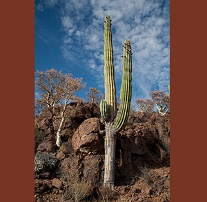
Soy uno de los cactos más altos. Tengo forma de columna con los brazos levantados saludando al sol. Crezco lentamente y puedo vivir hasta qué creen... 300 años. Mis flores son visitadas por abejas, aves y murciélagos en busca de néctar. Los carpinteros hacen sus nidos en mi tronco que con sus picos a veces me hacen cosquillas.
Pájaro Carpintero de Gila
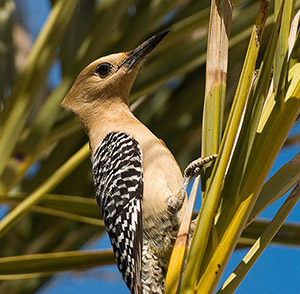
Los carpinteros somos de las pocas especies que hacemos agujeros en los árboles y en los cactos y muchas otras especies los utilizan. Como otros pájaros carpinteros puedes reconocerme al volar ya que hago grandes columpios en el aire. ¡Uuu, Uuu, Uuu! Tengo una lengua muy larga con la que saco a los pequeños pero deliciosos insectos de los troncos.
Cacto Chaute
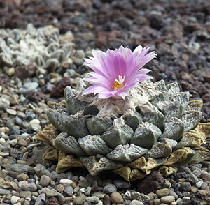
Soy un cacto muy pequeñito que vivo enterrado. Mis flores son muy llamativas, pero cuando no tengo flores es difícil verme. Por eso algunos me conocen como roca viva. Los coleccionistas me buscan mucho y han hecho que sea muy escaso. Cuídenme, ¿no?
Cacto Viejito
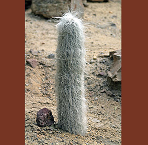
Soy un cacto en forma de columna, que además de espinas tengo largas cerdas que parecen pelo blanco. Muchas aves me utilizan para poner sus nidos. Mis flores de color amarillo rosado se abren solamente por la noche y se ponen a contar estrellas. Los pájaros se comen mis frutos y dispersan las semillas.
Cacto Estrella
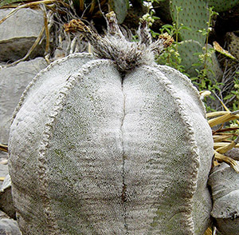
Soy un cacto pequeño en forma de erizo de mar. Mis flores amarillas son grandes y llamativas. Soy muy raro en la naturaleza, pero me han logrado cultivar en algunos países para venderme como planta ornamental y ponerme en sus casas y jardines.
Tortuga del Desierto
Paso el día en la madriguera y salgo a comer por las mañanas y por las tardes cuando no hace mucho calor. Aunque me protejo de los depredadores con mi fuerte caparazón, mis crías no tienen la misma suerte. Son alimento de cuervos, tejones, zorrillos, correcaminos y halcones. Puedo vivir hasta 100 años.
Palo Fierro
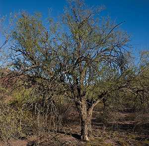
Soy un árbol de lento crecimiento pariente del frijol. Mi madera es muy pesada por eso me llaman Palo Fierro. Tengo flores rosas y mis semillas crecen en vainas. A muchas otras plantas les gusta crecer cerca de mí, ya que les doy sombra y el suelo es fértil para crecer sanas y fuertes como yo. Seguramente has visto las artesanías que hacen de mi madera.
Liebre de Cola Negra
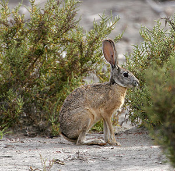
Tengo unas orejas muy largas que me ayudan a enfriar cuando hace mucho calor. A diferencia de los conejos, las liebres no hacemos agujeros para tener a nuestras crías, simplemente los tenemos sobre la superficie del suelo. Además, nuestros bebés nacen con los ojos abiertos y con pelo, muy guapos, listos para dar el salto. Nos alimentamos de hierbas, pastos y arbustos.
Cacto Magueyito
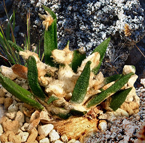
También soy un cacto muy pequeñito pero me parezco a los magueyes. Soy de crecimiento muy lento y mis poblaciones están muy restringidas. Las cabras me hacen mucho daño. Ah, un mensaje para ellas: ¡comelonas!
Tarántula
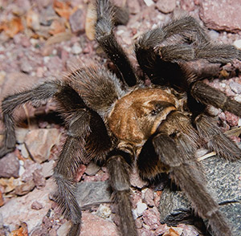
Soy una araña de gran tamaño. Me alimento de insectos pero puedo comer hasta lagartijas. Cuando me molestan puedo lanzar mis pelos que causan ardor. A pesar de esta defensa tengo muchos depredadores entre los mamíferos, aves y reptiles, pero ninguno tan temerario como la avispa gigante.
Pata de Elefante
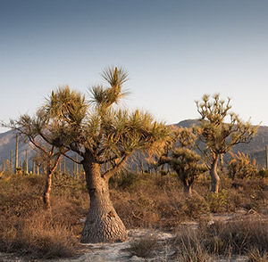
Soy un árbol con un tronco muy grande en su base, de ahí mi nombre. También me llaman sotolín. Sólo vivo en el Valle de Tehuacán pero en algunos lugares me cultivan como planta ornamental para lucirme en sus casas y jardines. Puedo crecer en condiciones muy extremas de calor y de sequía, al igual que los cactos.
Correcaminos
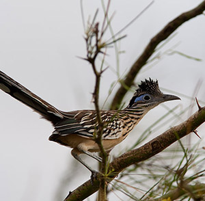
Me llaman así, porque casi siempre ando caminando con prisas. Me alimento de lagartijas, pequeñas serpientes, insectos y tarántulas. Delicioso ¿no? Hago mi nido entre las ramas de los cactos para protegerlo. Me corretean los coyotes, zorras y desde el aire... los gavilanes y halcones. ¡Adiós, tengo prisa!
Lagartija Cola de Látigo
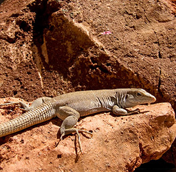
Soy un reptil carnívoro. Me alimento durante el día de pequeños insectos y arañas que viven en el suelo. Me gusta vivir cerca de la vegetación ya que me protege de las serpientes y otros depredadores. En algunas poblaciones las hembras podemos tener crías aunque no haya machos.
Rata Canguro
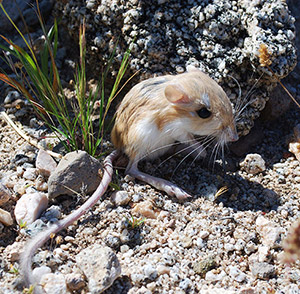
Para nada soy pariente de los canguros, pero mis largas piernas y mi cola me ayudan a dar tremendos saltos. Me alimento de semillas e insectos que guardo en unas bolsitas cerca de la boca. Soy nocturna y me persiguen una gran cantidad de depredadores, como víboras, tecolotes y zorritas.
Cirio
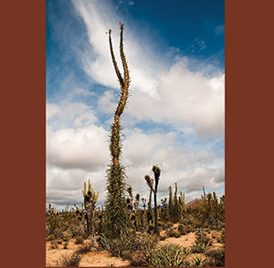
Soy una de las plantas más raras del mundo, parezco una zanahoria peluda parada de cabeza. Mis parientes son los larguiruchos ocotillos. Vivo en la Península de Baja California y en Sonora. Mis pequeñas flores son polinizadas por muchas especies de insectos y de aves.